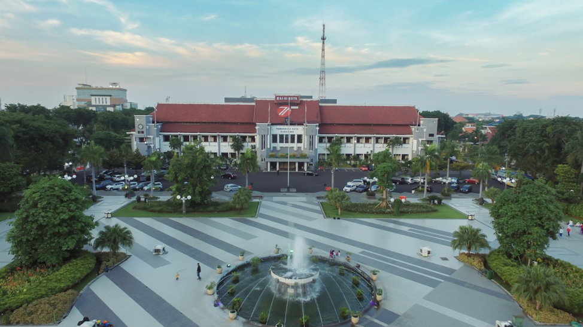
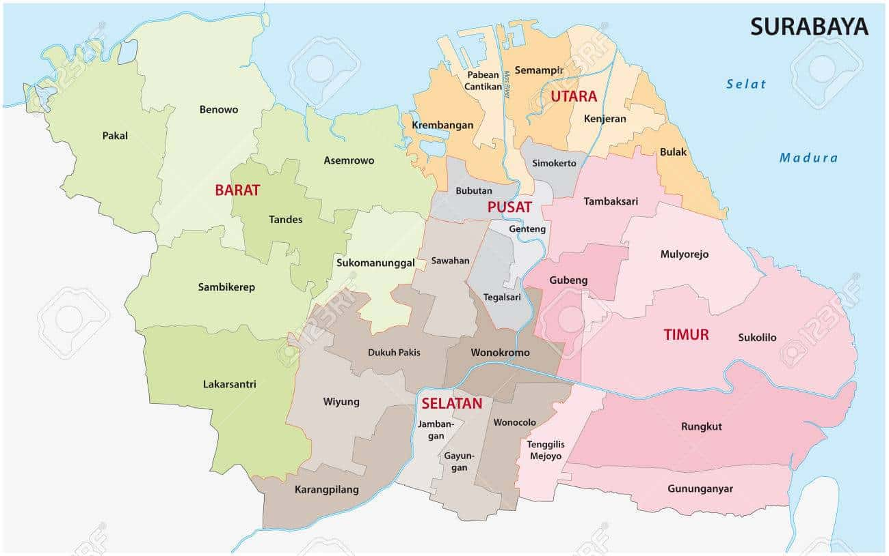
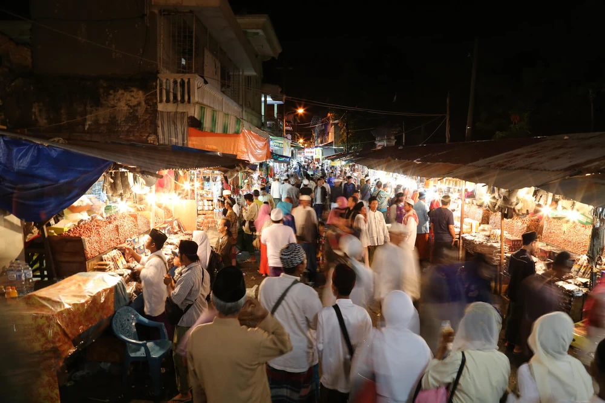
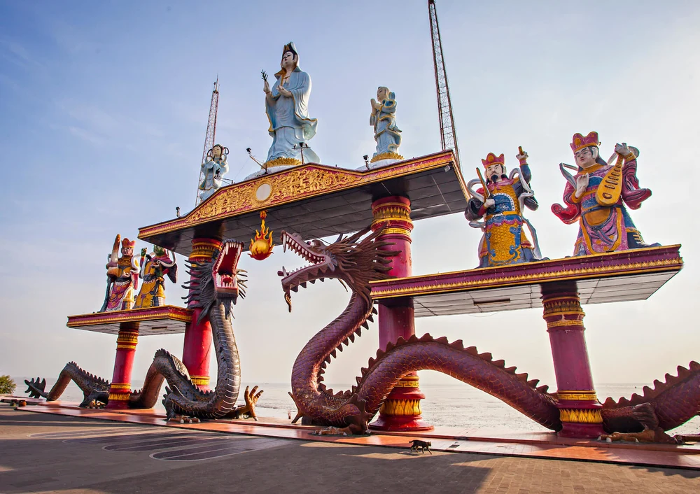
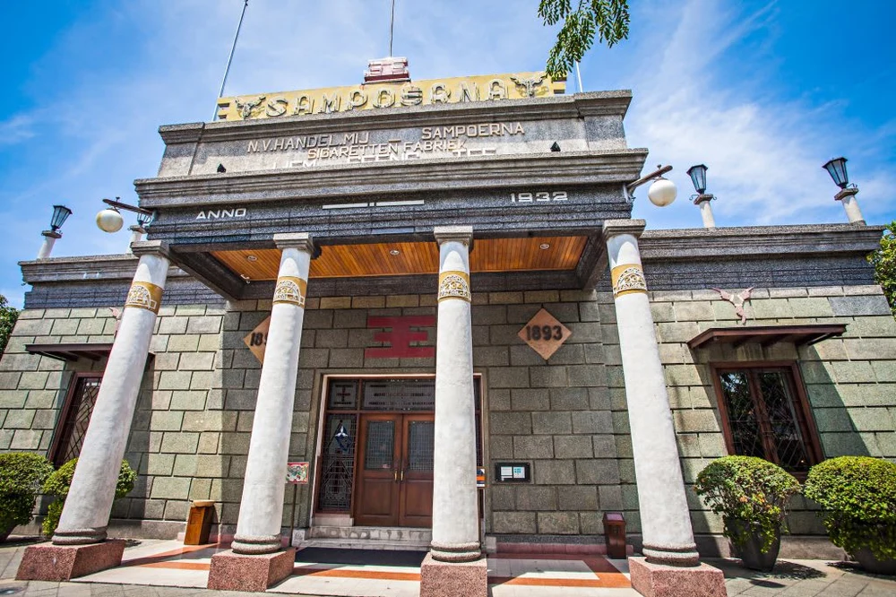

Sejarah

Surabaya adalah kota pelabuhan di pulau Jawa, Indonesia. Kota metropolitan yang dinamis dan luas ini memadukan gedung pencakar langit modern dengan kanal dan bangunan dari masa kolonial Belanda. Kota ini memiliki Pecinan yang berkembang pesat dan Kawasan Arab dengan Masjid Ampel yang dibangun pada abad ke-15. Tugu Pahlawan (Tugu Pahlawan) menghormati perjuangan kemerdekaan yang terjadi di jalan-jalan Surabaya pada
Geografis

Secara geografis, terletak di 7°9- 7°21 Lintang Selatan dan 112° 36- 112° 54 Bujur Timur. Kota Surabaya berbatasan dengan Selat Madura di utara dan timur, Kabupaten Sidoarjo di selatan, dan Kabupaten Gresik di barat. Kota Surabaya memiliki luas 33.306,30 Ha.
Wisata
Kampung Arab

Keberagaman Indonesia tercermin dari banyaknya suku dan budaya yang dimiliki. Terdapat beberapa kampung di Surabaya yang dibagi berdasarkan etnisnya, salah satunya adalah Kampung Arab.
Kampung ini dihuni oleh penduduknya yang mayoritas berasal dari Arab. Kampung Arab menjadi salah satu kampung yang dijadikan tempat wisata di Surabaya dan mendapat perhatian dari banyak wisatawan. Salah satu alasan utamanya adalah karena bisa dijadikan tujuan wisata religi.
Selain bisa mengenal budaya Arab yang masih kental, kamu juga bisa berburu suvenir mulai dari pakaian, minyak wangi, hingga peralatan ibadah yang dijual di kampung yang terletak di kawasan Ampel tersebut.
Kelenteng Sanggar Agung

Berlokasi di kawasan Pantai Ria Kenjeran menjadikan Kelenteng Sanggar Agung memiliki daya tarik tersendiri. Di sini berdiri banyak patung-patung seperti Dewi Kwan Im yang merupakan ikon dari kelenteng ini, patung Sha Nan dan Tong Nu serta patung naga yang meliuk.
Kelenteng ini cocok dijadikan tempat wisata religi di Surabaya. Jika ingin lebih mendapatkan suasana sakral, kamu bisa datang saat perayaan Imlek karena kelenteng ini rama dikunjungi orang untuk beribadah maupun wisatawan lokal maupun asing.
Museum House of Sampoerna

Surabaya juga dikenal memiliki tempat wisata berupa museum. Salah satunya yang wajib dikunjungi adalah Museum House of Sampoerna. Museum kretek yang beralamat di Taman Sampoerna 6 ini awalnya merupakan tempat pertama produksi rokok Sampoerna.
Di sini kamu bisa mengenal sejarah kretek di Indonesia. Mulai dari mengenal jenis-jenis cengkeh, pemantik rokok, dan tentu saja bisa melihat proses pembuatan rokok. Museum ini juga menawarkan kepada pengunjung keliling Surabaya gratis dengan menggunakan sebuah bus.
Museum ini juga memiliki kafe dan tempat penjualan suvenir di lantai dua. Tentu saja museum ini juga cukup Instagramable untuk dijadikan spot foto. Siapkan kamera, ya!